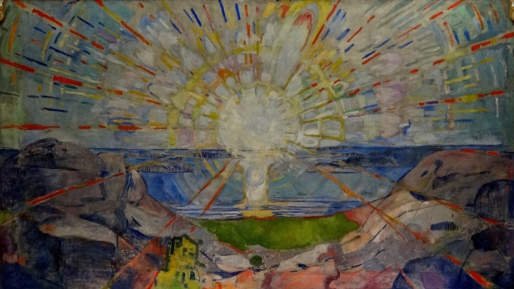

Åsgårdstrand, a summer night in the 1890s · inside the paintings of Edvard Munch

The Sun
Edvard Munch spent his summers in Åsgårdstrand, a fishing village on the Oslofjord. Its pier, its shore and its white houses are in his paintings, and the streets you walked are the real ones.